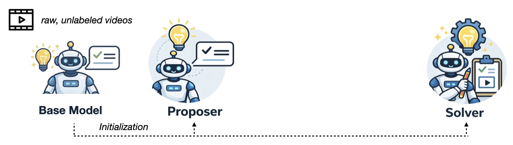
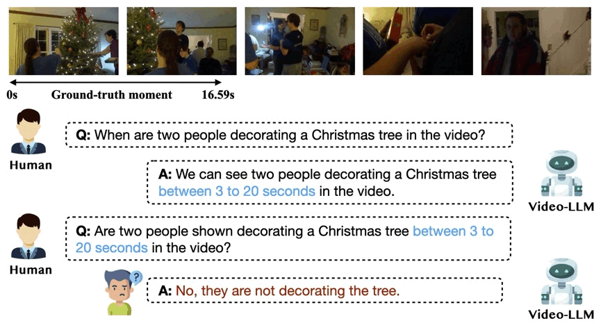
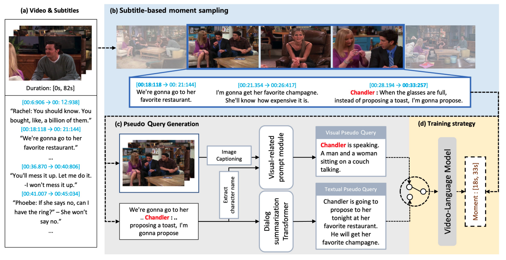

About I'm a Ph.D. student at Seoul National University, advised by Byoung-Tak Zhang. I'm currently visiting FarSight Lab at Northeastern University, working with Lorenzo Torresani. My research focuses on video understanding and multimodal learning, with an emphasis on fine-grained visual perception and robust temporal reasoning for real-world AI applications. In the past, I worked with Junbin Xiao and Angela Yao at National University of Singapore. |
|
|
|
|

EvoGround: Self-Evolving Video Agents for Video Temporal Grounding
Neural Information Processing Systems (NeurIPS), 2026
paper /
code /
project page /
We introduce EvoGround, a framework of two coupled self-evolving agents — a proposer and a solver — that learn video temporal grounding from raw videos without any manual labels. Through a self-reinforcing loop driven entirely by reinforcement learning, EvoGround matches or outperforms most fully supervised models across multiple benchmarks.
EgoExo-Con: Exploring View-Invariant Video Temporal Understanding
European Conference on Computer Vision (ECCV), 2026
*Earlier version has been accepted to
NeurIPS 2025 Workshop on Multimodal Algorithmic Reasoning.
paper /
code /
project page
We introduce EgoExo-Con, a new benchmark comprising synchronized ego-exo video that evaluates a model whether it can maintain consistent temporal understanding across viewpoints. Existing models struggle with this challenge, and we propose View-GRPO for improvement.

On the Consistency of Video Large Language Models in Temporal Comprehension
Conference on Computer Vision and Pattern Recognition (CVPR), 2025
*Earlier version has been accepted by
NeurIPS Workshop on Video-Language Models, 2024.
paper /
code
We reveal that video large language models struggle to maintain consistency in grounding and verification. We systematically analyze this issue and introduce an effective training method, Event Temporal Verification Tuning (VTune), leading to substantial improvements in both grounding and consistency.

Modal-specific Pseudo Query Generation for Video Corpus Moment Retrieval
Empirical Methods in Natural Language Processing (EMNLP), 2022
paper /
code
We propose Modal-specific Pseudo Query Generation Network (MPGN), a self-supervised framework for Video Corpus Moment Retrieval (VCMR). MPGN captures orthogonal axis of information in videos and generates pseudo-queries that provide a considerable performance boost, even without human annotations.
|
|